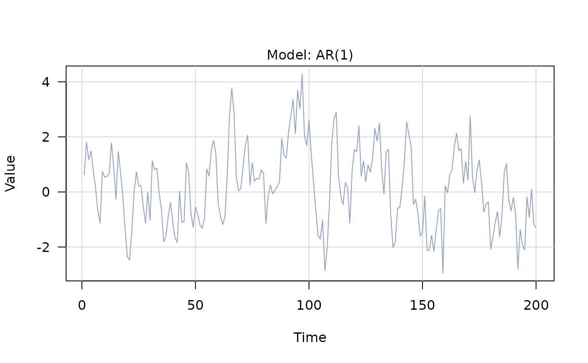
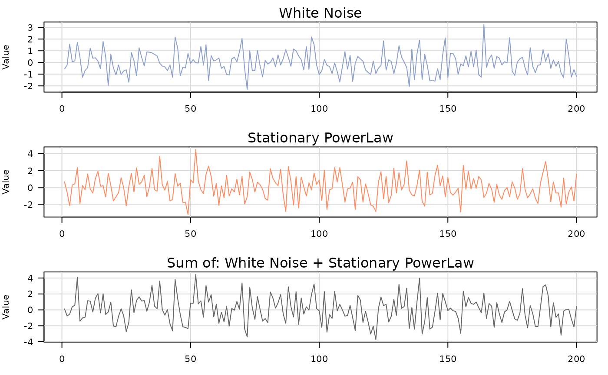

Generate a time series from a model
Usage
generate(object, n, seed = NULL, ...)
Arguments
- object
A time_series_model or sum_model.
- n
Length of series to generate.
- seed
Optional integer seed for reproducibility.
- ...
Passed to method.
Value
A generated_time_series (single model) or
generated_composite_model_time_series (sum model).
Examples
# Single model
m1 <- ar1(phi = 0.8, sigma2 = 1)
y1 <- generate(m1, n = 200, seed = 123)
plot(y1)

# Composite model
m2 <- wn(sigma2 = 1) + pl(kappa = 0.3, sigma2 = 2)
y2 <- generate(m2, n = 200, seed = 123)
plot(y2)
